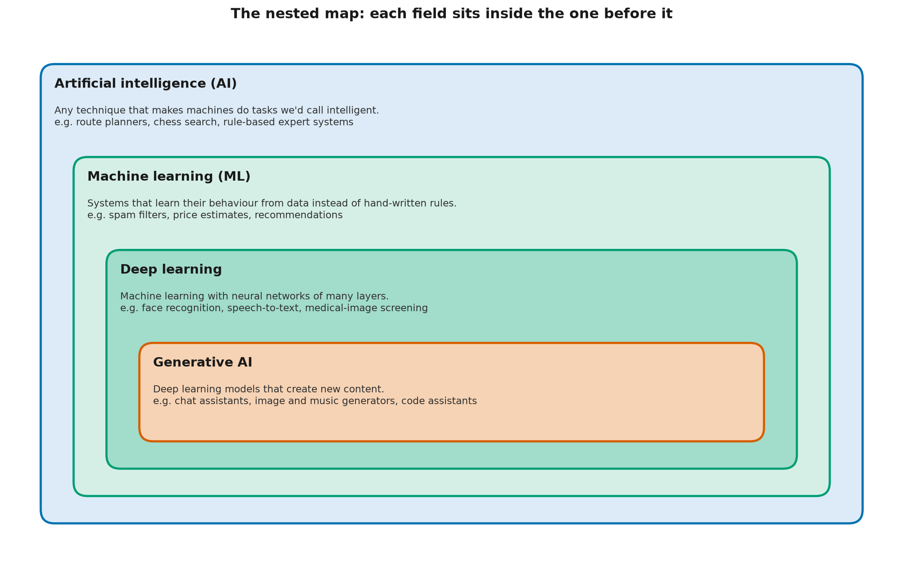

AI, ML, Deep Learning, Generative AI: The Nested Map
Learning objectives
By the end you will be able to:
- Explain how AI, machine learning, deep learning and generative AI relate to each other.
- Classify a given system into the innermost category that fits, using four questions.
- Define a neural network, a parameter and a foundation model in plain language.
- Identify two places where the neat nested picture breaks down.
Why this matters
The four terms are used loosely, and often interchangeably, in news, marketing and even job descriptions. That causes real confusion. A team asks for "AI" when a few lines of conventional code would do. A risk review treats a rule-based tool like a large generative model, or the reverse. A clear map lets you ask the right questions: does this system learn from data? Could its output be new, and wrong? Each answer changes how you build, test and govern it.
🟢 Core idea (everyone)
Boxes inside boxes

Each field is a part of the one around it: AI contains machine learning, which contains deep learning, which contains generative AI.
Artificial intelligence (AI), which you met in L0-01, is the outermost box: any technique that makes a machine do something we'd call intelligent. That includes methods that learn nothing at all. A route planner that searches a road map for the shortest path is AI. So is a chess program that searches millions of moves using a scoring formula a person wrote. AI built from hand-written rules and logic is often called symbolic AI, or a rule-based system.
If symbolic AI is built from hand-written rules, how is it different from the conventional software in L0-01? It isn't, in how it's built. What puts it inside AI is the kind of task: searching, planning, reasoning or conversing, rather than, say, adding up an invoice.
Machine learning (ML) sits inside AI. Here the system's behaviour comes from data. You give it examples, and a learning method adjusts the system until it handles the examples well. When each example comes with the right answer (an email labelled "spam"), it's called supervised learning. When the system finds structure in data that has no answers attached, it's called unsupervised learning.
Deep learning sits inside machine learning. It uses neural networks: models built from many simple calculating units arranged in layers, where each layer transforms the output of the one before. "Deep" just means many layers. The numbers that a network adjusts during training are called its parameters. A small network might have thousands of them. A large language model has billions.
Generative AI sits inside deep learning. These are deep learning models whose main job is creating content: text, images, audio, video or code. Many are foundation models: very large models trained on broad data that can then be adapted to many different tasks.
An analogy, and where it breaks
Think of nested geographic regions: a continent contains a country, which contains a province, which contains a city. Every city is in a province, but most of the province isn't the city. In the same way, every generative AI system is (today) a deep learning system, but most deep learning isn't generative. Face recognition and speech-to-text are deep learning that judges or transcribes rather than creates.
Where the analogy breaks down: borders between countries are fixed and agreed. Borders between these fields are fuzzy and partly a matter of convention. Some generative models are not deep learning at all. The toy word generator in L0-01 learns from data and creates new text, but it has no neural network. By the box diagram it should sit in "machine learning", not "generative AI", even though it generates. The 🔴 section returns to this.
Four questions that place any system
Ask these in order, and stop at the first "no":
| # | Question | If "no", the system is… |
|---|---|---|
| 1 | Does it do a task we'd call intelligent (perceive, reason, plan, decide, create)? | Not AI: conventional software |
| 2 | Does its behaviour come from learning on data, not only from hand-written rules? | AI, but not machine learning |
| 3 | Does it use a neural network with many layers? | Machine learning, but not deep learning |
| 4 | Is its main output new content? | Deep learning, but not generative |
| All four "yes" | Generative AI |
Worked examples
| System | Q1 | Q2 | Q3 | Q4 | Where it sits |
|---|---|---|---|---|---|
| Tax calculator applying fixed formulas | no | Not AI | |||
| Chess program with a hand-written scoring formula | yes | no | AI, not ML | ||
| Spam filter trained on labelled emails by counting words | yes | yes | no | ML, not deep learning | |
| Photo app that recognizes faces with a deep network | yes | yes | yes | no | Deep learning, not generative |
| Chat assistant built on a large language model | yes | yes | yes | yes | Generative AI |
Question 1 is the vague one. Reasonable people disagree about where "intelligent" starts. A motion-sensor light that switches on when something moves makes a decision, but almost nobody calls it AI. When in doubt, questions 2–4 are the ones that matter in practice: they tell you how the system was built, and so how it can fail.
🟡 How it works (practitioner)
The four questions as code
code/where_does_it_fit.py turns the table into a function. Each
system is described by four booleans, and place walks inward through the map:
def place(s: System) -> str:
if not s.does_ai_task:
return "Not AI: conventional software"
if not s.learns_from_data:
return "AI, but not machine learning"
if not s.deep_network:
if s.generates:
return "Machine learning: a simple generative model (not deep learning)"
return "Machine learning, but not deep learning"
if s.generates:
return "Generative AI (deep learning that creates content)"
return "Deep learning, but not generative"
Run it from this lesson's folder with python code/where_does_it_fit.py:
Tax calculator applying fixed formulas -> Not AI: conventional software
Chess program searching moves with hand-written scoring -> AI, but not machine learning
Spam filter that counts words in labelled emails -> Machine learning, but not deep learning
Word-pair text generator (like L0-01's) -> Machine learning: a simple generative model (not deep learning)
Photo app that recognizes faces with a deep network -> Deep learning, but not generative
Chat assistant built on a large language model -> Generative AI (deep learning that creates content)
Image generator that turns a description into a picture -> Generative AI (deep learning that creates content)
Notice the fourth line. The code needed an extra branch for a system that generates but isn't deep learning, because the strict box diagram has no place for it.
What actually differs between the boxes
The labels matter less than what changes as you move inward:
| Moving inward to… | What you gain | What you take on |
|---|---|---|
| Machine learning | Handles patterns too complex to write as rules | Behaviour depends on training data quality; failures are harder to predict |
| Deep learning | Learns directly from raw text, pixels and audio | Needs much more data and computation; harder to explain why it decided something |
| Generative AI | Produces open-ended content, works across many tasks | Output can be new and wrong; harder to test, because there's no single right answer |
Common pitfalls
- Calling everything "AI". Many products marketed as AI are mostly conventional software. Ask what is learned, from what data, and where.
- Assuming deep learning is always better. For small, structured problems (a few columns in a spreadsheet), simpler machine learning often matches or beats deep learning, and is far easier to explain.
- Assuming "generative" means "deep". True for the systems in the news today, but not true by definition, as the word-pair generator shows.
🔴 Going deeper (expert)
Where the nested map breaks down
1. Generative is a property, not a box. Formally, a generative model is one that models the data distribution p(x) and can sample from it (L0-01). By that definition, generative models long predate deep learning. Andrey Markov analyzed sequences of vowels and consonants in Pushkin's novel in verse Eugene Onegin in 1913; Claude Shannon generated English-like text from letter and word statistics in 1948 (L0-03 recreates it); hidden Markov models were the backbone of speech recognition for decades. "Generative AI" in today's usage means deep generative models, so the nested picture describes current usage, not a mathematical necessity.
2. Many systems are hybrids. A route planner might use learned traffic predictions (ML) inside a classic search algorithm (symbolic AI). A chat assistant combines a generative model with retrieval, rules and filters. Placing "the system" on the map is less useful than placing each component, because each component fails and is tested differently.
3. Learning paradigms cut across the boxes. Large language models are mostly trained with self-supervised learning: the labels come from the data itself (the "answer" for each position in a text is simply the next token). That doesn't fit the classic supervised versus unsupervised split. Post-training then adds supervised and reinforcement learning on top (L2-09, L7-07).
Narrow and general AI
Most researchers would describe every AI system in use today (as of November 2026) as narrow AI: built and validated for particular ranges of tasks, even when that range is wide. Some argue that today's largest models already show meaningful generality, which is part of the debate below. Artificial general intelligence (AGI) usually refers to a hypothetical system that matches or exceeds people across essentially all cognitive tasks.
Open debate (as of November 2026): there is no agreed definition of AGI, no agreed test for it, and no consensus on whether or when it could be built. Claims in either direction are predictions, not established facts. This catalog teaches what current systems do and how to evaluate them, which stays useful whichever way that debate goes.
Why the classification matters in production
The map predicts the engineering and governance work a system needs:
- Testing. Rule-based systems can be tested against their specification. Learned systems need held-out evaluation data. Generative systems need evaluation of open-ended output, which is still an active research area (Level 5, L7-11).
- Explainability. You can read a rule. You can inspect a small model's learned weights. Explaining a deep network's individual decisions is much harder (L7-09, L7-10).
- Risk. Frameworks such as the EU AI Act (adopted in 2024) regulate by use and risk level more than by technique, but the technique still determines which failure modes you must control (L6-11).
Common misconceptions
- Myth: AI and machine learning are the same thing. Reality: Machine learning is one part of AI. Search, planning and rule-based reasoning are AI too, and they learn nothing.
- Myth: Deep learning is a completely different field from machine learning. Reality: Deep learning is machine learning with large, many-layered neural networks. The core ideas (data, a model, training to reduce errors) are the same.
- Myth: Generative AI can only produce text. Reality: Deep generative models also produce images, audio, video, code, 3-D shapes and more. L2-12 to L2-14 cover the main families.
- Myth: Today's systems are general intelligences. Reality: They can be broadly capable and still fail on tasks a child finds easy. Whether general intelligence is near is an open debate, not a settled fact.
Hands-on exercise
Goal: place six more systems on the map, and notice which questions are hard to answer.
Open exercises/place_these.py, replace every None with True or
False, and run it. No coding? Answer the four questions on paper for each system:
- A thermostat that switches heating on below 19 °C
- A route planner that searches a road map for the shortest path
- Speech-to-text on a phone, using a deep network
- A music generator that composes new melodies with a deep network
- A house-price estimator fitted to past sales with a straight line
- A rule-based chatbot that fills in templates like "Tell me more about X"
Solution
The full solution, with reasoning, is in exercises/solutions/place_these.py:
Thermostat -> Not AI: conventional software
Route planner -> AI, but not machine learning
Speech-to-text -> Deep learning, but not generative
Music generator -> Generative AI (deep learning that creates content)
House-price line -> Machine learning, but not deep learning
Rule-based chatbot -> AI, but not machine learning
The two worth discussing: the rule-based chatbot produces text, but from hand-written templates, so it's symbolic AI rather than generative AI. The house-price line is simple, but fitting it to data is machine learning. "Simple" and "learned" are different questions.
Check your understanding
- Which statement about the four fields is correct?
B. Deep learning is the part of machine learning that uses many-layered neural networks. A is backwards: much machine learning isn't deep. C is wrong because search, planning and rule-based systems are AI without learning.
- A delivery company's system picks the order of stops using a classic search algorithm, with travel times predicted by a model trained on past trips. Where does it belong? (choose all that apply)
A, B. It's a hybrid: a symbolic search component and a learned prediction component. It isn't generative, because its output is a choice of order, not new content. Placing each component on the map is more useful than placing the whole system.
- Which statements are correct? (choose all that apply)
A, C, D. Parameters are the learned numbers (A). Settings chosen by people before training (B) are a different thing, often called hyperparameters. A foundation model (C) is defined by its size, broad training data and adaptability, not by any single task. Layers (D) are the structure that holds the parameters.
- Why does the L0-01 word-pair generator not fit neatly into the box diagram?Did your answer cover the main points?
It learns from data and creates new text, so it's a generative model, but it has no neural network, so it isn't deep learning. The box diagram puts all of generative AI inside deep learning, which matches how the term is used today, but generative models existed long before deep learning.
- Explain it to a colleague: a manager asks, "Is our new invoice-matching tool AI or machine learning?" Explain how you'd find out, and why the answer matters.Did your answer cover the main points?
Ask whether its behaviour comes from rules people wrote or from learning on past invoices, and whether it creates content or just matches and classifies. If it's rule-based, it can be tested directly against its rules. If it learned from data, its quality depends on that data, and it needs evaluation on examples it hasn't seen. The answer tells you how it can fail and how to test and govern it.
Key terms
Further reading
- 🟢 Elements of AI, chapter 1 — University of Helsinki and MinnaLearn. Explains the relationship between AI, machine learning and deep learning for a general audience. https://www.elementsofai.com/
- 🟡 Deep Learning — Ian Goodfellow, Yoshua Bengio and Aaron Courville (MIT Press, 2016). The introduction (chapter 1) gives the classic nested view and its history. Free to read online. https://www.deeplearningbook.org/
- 🔴 On the Opportunities and Risks of Foundation Models — Bommasani et al. (2021). Coined the term "foundation model" and discusses what makes these models different. https://arxiv.org/abs/2108.07258
Next
- Next lesson: L0-03 A Short History: From Rules to Generative Models
- Related: Level 1 builds neural networks from scratch. L2-12 compares the families of generative models, including ones that aren't language models.